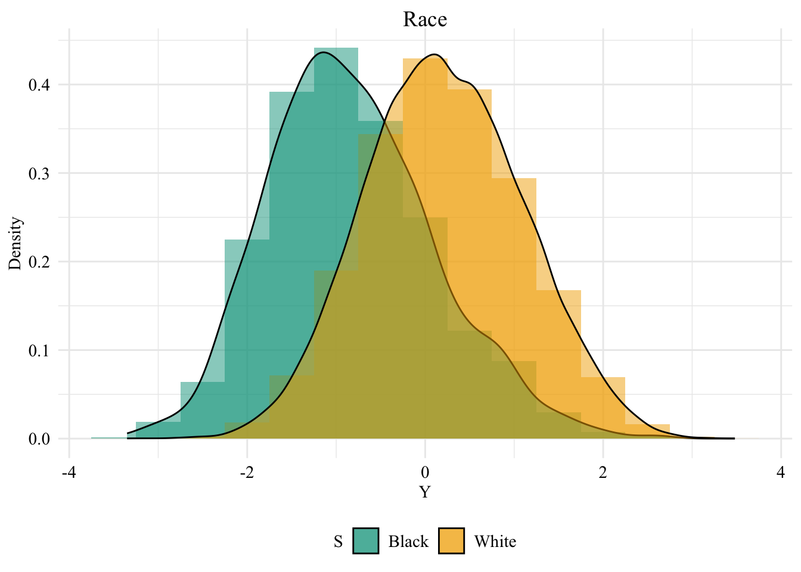
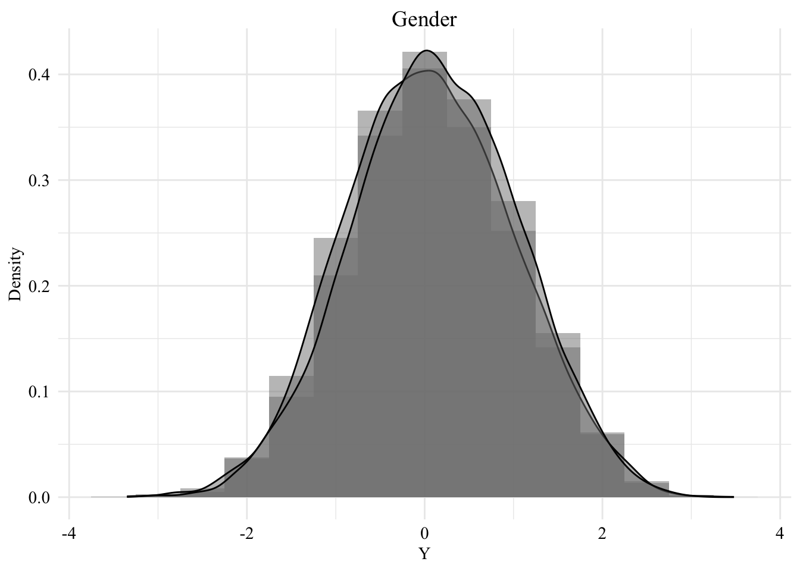

This chapter presents the law school dataset (Wightman (1998)) used in the next chapters to illustrates the different methodologies. It then presents the causal graph assumed in the upcoming examples.
This law school dataset contains information collected through a survey conducted from 1991 through 1997 by the Law School Admission Council across 163 law schools in the United States of America (Wightman (1998)). In total, 21,790 law students were tracked through law school, graduation, and sittings for bar exams.
Each row from the raw data gives information for a student. The following characteristics are available:
race: Race of the student (character: Amerindian, Asian, Black, Hispanic, Mexican, Other, Puertorican, White).
sex: Sex of the student (numeric: 1 female, 2 male).
LSAT: LSAT score received by the student (numeric).
UGPA: Undergraduate GPA of the student (numeric).
region_first: region in which the student took their first bar examination (Far West, Great Lakes, Midsouth, Midwest, Mountain West, Northeast, New England, Northwest, South Central, South East) (character)
ZFYA: standardized first-year law school grades (first year average grade, FYA) (numeric).
sander_index: Sander index of the student: weighted average of normalized UGPA and LSAT scores (however, no details are given for this specific dataset, see Sander (2004), p. 393) (numeric)
first_pf: Probably a binary variable that indicates whether the student passed on their first trial ? No information is given about this variable… (numeric 0/1).
6.1 Data Pre-Processing
We load the data:
df <-read_csv('../data/law_data.csv')
Here is some summary information on this dataset:
summary(df)
...1 race sex LSAT
Min. : 0 Length:21791 Min. :1.000 Min. :11.00
1st Qu.: 6516 Class :character 1st Qu.:1.000 1st Qu.:33.00
Median :13698 Mode :character Median :2.000 Median :37.00
Mean :13732 Mean :1.562 Mean :36.77
3rd Qu.:20862 3rd Qu.:2.000 3rd Qu.:41.00
Max. :27476 Max. :2.000 Max. :48.00
UGPA region_first ZFYA sander_index
Min. :0.000 Length:21791 Min. :-3.35000 Min. :0.3875
1st Qu.:3.000 Class :character 1st Qu.:-0.55000 1st Qu.:0.7116
Median :3.300 Mode :character Median : 0.09000 Median :0.7696
Mean :3.227 Mean : 0.09643 Mean :0.7669
3rd Qu.:3.500 3rd Qu.: 0.75000 3rd Qu.:0.8274
Max. :4.200 Max. : 3.48000 Max. :1.0000
first_pf
Min. :0.0000
1st Qu.:1.0000
Median :1.0000
Mean :0.8884
3rd Qu.:1.0000
Max. :1.0000
Then, we focus on a subset of variables of interest:
df <- df |>select( race, # we can take S = race (white/black) sex, # or S = gender LSAT, UGPA, ZFYA # Y )
We create a dataset where the only protected class is the race, and we focus on Black individuals and White individuals only:
# Table for S = racedf_race <- df |>select( race, UGPA, LSAT, ZFYA ) |>filter( race %in%c("Black", "White") ) |>rename(S = race,X1 = UGPA,X2 = LSAT,Y = ZFYA ) |># no NA valuesmutate(S =as.factor(S) )
And another dataset in which the only protected class is the sex:
# Table for S = genderdf_gender <- df |>select( sex, UGPA, LSAT, ZFYA ) |>rename(S = sex,X1 = UGPA,X2 = LSAT,Y = ZFYA ) |># no NA valuesmutate(S =as.factor(S) )
ggplot(data = df_race, mapping =aes(x = Y, fill = S)) +geom_histogram(mapping =aes(y =after_stat(density)), alpha =0.5, position ="identity", binwidth =0.5 ) +geom_density(alpha =0.5) +labs(title ="Race",x ="Y",y ="Density" ) +global_theme()
Figure 6.1: Distribution of the standardized first-year law school grades among the two groups, when \(S\) is the race

ggplot(data = df_gender, mapping =aes(x = Y, fill = S)) +geom_histogram(mapping =aes(y =after_stat(density)), alpha =0.5, position ="identity", binwidth =0.5 ) +geom_density(alpha =0.5) +labs(title ="Gender",x ="Y",y ="Density" ) +global_theme()
Figure 6.2: Distribution of the standardized first-year law school grades among the two groups, when \(S\) is the gender

6.2 Causal graph
The assumed causal graph we use here is different from that of the different papers De Lara et al. (2024), Kusner et al. (2017), Black, Yeom, and Fredrikson (2020) using the same dataset.
We make the following assumptions:
The sensitive attribute, (S) (race), has no parents.
The two other explanatory variables, (X_1) (UGPA) and (X_2) (LSAT), both directly depend on the sensitive attribute.
The second variable, (X_2) (LSAT), also depends on the first variable, (X_1) (UGPA). This is done for illustrative purposes, assuming that the score obtained on the LSAT is influenced by the UGPA.
The two variables, (X_1) (UGPA) and (X_2) (LSAT), cause the target variable (Y), i.e., whether the student obtained a high standardized first-year average (ZFYA).
The corresponding Structural Equation Model writes:
\[
\begin{cases}
S: \text{ sensitive attribute (race)} \\
X_1 = h_1(S, U_1): \text{ UGPA, dependent on } S \\
X_2 = h_2(S, X_1, U_2): \text{ LSAT, dependent on } S \text{ and } X_1 \\
Y = h_3(X_1, X_2, U_Y): \text{ ZFYA, dependent on } X_1 \text{ and } X_2 \\
\end{cases}
\]
where (U_1), (U_2), and (U_Y) are independent error terms.
In R, we construct the upper triangular adjacency matrix to reflect our assumed causal structure:
Black, Emily, Samuel Yeom, and Matt Fredrikson. 2020. “Fliptest: Fairness Testing via Optimal Transport.” In Proceedings of the 2020 Conference on Fairness, Accountability, and Transparency, 111–21.
De Lara, Lucas, Alberto González-Sanz, Nicholas Asher, and Jean-Michel Loubes. 2021. “Transport-Based Counterfactual Models.”arXiv 2108.13025.
De Lara, Lucas, Alberto González-Sanz, Nicholas Asher, Laurent Risser, and Jean-Michel Loubes. 2024. “Transport-Based Counterfactual Models.”Journal of Machine Learning Research 25 (136): 1–59.
Kusner, Matt J, Joshua Loftus, Chris Russell, and Ricardo Silva. 2017. “Counterfactual Fairness.” In Advances in Neural Information Processing Systems 30, edited by I. Guyon, U. V. Luxburg, S. Bengio, H. Wallach, R. Fergus, S. Vishwanathan, and R. Garnett, 4066–76. NIPS.
Sander, Richard H. 2004. “A Systemic Analysis of Affirmative Action in American Law Schools.”Stan. L. Rev. 57: 367.